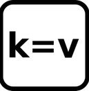
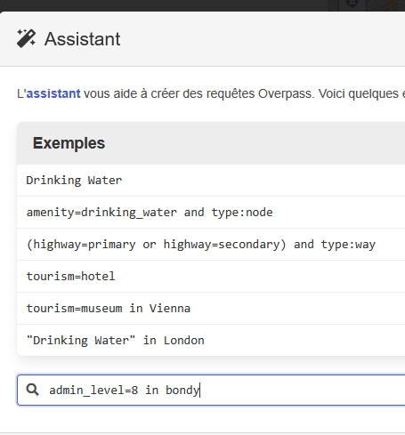
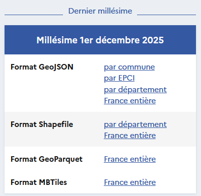
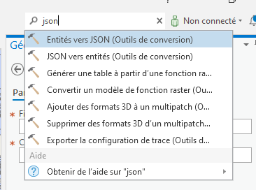

Objet
Rechercher de la donnée
Quel type de donnée ?
Parcourir le cours du groupe 3 et donner les 3 types de plateforme de données présentées.
copernic hub => raster
lidar => raster
data.gouv => vecteur
Le présent cours ne portera que sur des données vectorielles.
Code
<- read.csv ("data/data.csv" , fileEncoding = "UTF-8" ):: kable (data)
cadastre dpt (limites communes dpt)
2025
NA
shape
500 K°
dpt
https://cadastre.data.gouv.fr/data/etalab-cadastre/2025-12-01/shp/departements/93/
limite commune
2025
NA
geojson
26 K°
bondy
rqt assistant overpass : admin_level=8 in bondy
carreaux filosofi
2018
NA
gpkg
207 M°
france
https://www.insee.fr/fr/statistiques/7655475?sommaire=7655515
parcelles commune
2025
NA
geojson
4 M°
bondy
https://cadastre.data.gouv.fr/data/etalab-cadastre/2025-12-01/geojson/communes/93/93010/
Pour trouver la projection dans Arcgis Pro
clic droit sur couche / propriétés de la couche / source / référence spatiale
Donnée OSM


Cadastre
A partir de data.gouv, on tombe sur le cadastre etalab

On prend les parcelles de sa commune ET les limites des communes de son département.
Intégrer la donnée dans Arcgis
Télécharger votre donnée et la mettre dans un répertoire par exemple dataCours1
Utiliser la fenêtre Catalogue pour connecter votre répertoire
Tout dépend du format de votre donnée.

Sous R
Lecture des fichiers
Code
Linking to GEOS 3.13.1, GDAL 3.11.4, PROJ 9.7.0; sf_use_s2() is TRUE
Code
<- st_read ("data/dataCours1/cadastre-93010-parcelles.json" )
Reading layer `cadastre-93010-parcelles' from data source
`C:\Users\bmaranget\L6ECSIG\data\dataCours1\cadastre-93010-parcelles.json'
using driver `GeoJSON'
Simple feature collection with 7157 features and 9 fields
Geometry type: POLYGON
Dimension: XY
Bounding box: xmin: 2.469086 ymin: 48.88696 xmax: 2.500038 ymax: 48.92025
Geodetic CRS: WGS 84
Code
<- st_read ("data/dataCours1/communes.shp" )
Reading layer `communes' from data source
`C:\Users\bmaranget\L6ECSIG\data\dataCours1\communes.shp' using driver `ESRI Shapefile'
Simple feature collection with 39 features and 4 fields
Geometry type: POLYGON
Dimension: XY
Bounding box: xmin: 647882.1 ymin: 6856430 xmax: 670939.7 ymax: 6879246
Projected CRS: RGF93 v1 / Lambert-93
Code
<- st_read ("data/dataCours1/export.geojson" )
Reading layer `export' from data source
`C:\Users\bmaranget\L6ECSIG\data\dataCours1\export.geojson'
using driver `GeoJSON'
Simple feature collection with 2 features and 16 fields
Geometry type: GEOMETRY
Dimension: XY
Bounding box: xmin: 2.469086 ymin: 48.88697 xmax: 2.500121 ymax: 48.92025
Geodetic CRS: WGS 84
Code
<- st_read ("data/dataCours1/demographyref-france-donnees-carroyees-200m-millesime.geojson" )
Reading layer `demographyref-france-donnees-carroyees-200m-millesime' from data source `C:\Users\bmaranget\L6ECSIG\data\dataCours1\demographyref-france-donnees-carroyees-200m-millesime.geojson'
using driver `GeoJSON'
Simple feature collection with 132 features and 47 fields
Geometry type: POLYGON
Dimension: XY
Bounding box: xmin: 2.469062 ymin: 48.88657 xmax: 2.500293 ymax: 48.92055
Geodetic CRS: WGS 84
Problèmes éventuels de géométries
Attention extraction uniquement du polygone et des polygones valides
Code
# le geojson a des géométries différentes summary (bondy$ geometry)
POINT POLYGON epsg:4326 +proj=long...
1 1 0 0
Code
<- st_collection_extract (bondy, "POLYGON" )# verif des autres géométries summary (dpt$ geometry)
POLYGON epsg:2154 +proj=lcc ...
39 0 0
Code
summary (parcelle$ geometry)
POLYGON epsg:4326 +proj=long...
7157 0 0
Code
table (st_is_valid (parcelle$ geometry))
Intersections
Code
# Systèmes de projection st_crs (bondy)
Coordinate Reference System:
User input: WGS 84
wkt:
GEOGCRS["WGS 84",
DATUM["World Geodetic System 1984",
ELLIPSOID["WGS 84",6378137,298.257223563,
LENGTHUNIT["metre",1]]],
PRIMEM["Greenwich",0,
ANGLEUNIT["degree",0.0174532925199433]],
CS[ellipsoidal,2],
AXIS["geodetic latitude (Lat)",north,
ORDER[1],
ANGLEUNIT["degree",0.0174532925199433]],
AXIS["geodetic longitude (Lon)",east,
ORDER[2],
ANGLEUNIT["degree",0.0174532925199433]],
ID["EPSG",4326]]
Code
Coordinate Reference System:
User input: WGS 84
wkt:
GEOGCRS["WGS 84",
DATUM["World Geodetic System 1984",
ELLIPSOID["WGS 84",6378137,298.257223563,
LENGTHUNIT["metre",1]]],
PRIMEM["Greenwich",0,
ANGLEUNIT["degree",0.0174532925199433]],
CS[ellipsoidal,2],
AXIS["geodetic latitude (Lat)",north,
ORDER[1],
ANGLEUNIT["degree",0.0174532925199433]],
AXIS["geodetic longitude (Lon)",east,
ORDER[2],
ANGLEUNIT["degree",0.0174532925199433]],
ID["EPSG",4326]]
Code
Coordinate Reference System:
User input: WGS 84
wkt:
GEOGCRS["WGS 84",
DATUM["World Geodetic System 1984",
ELLIPSOID["WGS 84",6378137,298.257223563,
LENGTHUNIT["metre",1]]],
PRIMEM["Greenwich",0,
ANGLEUNIT["degree",0.0174532925199433]],
CS[ellipsoidal,2],
AXIS["geodetic latitude (Lat)",north,
ORDER[1],
ANGLEUNIT["degree",0.0174532925199433]],
AXIS["geodetic longitude (Lon)",east,
ORDER[2],
ANGLEUNIT["degree",0.0174532925199433]],
ID["EPSG",4326]]
Code
# Transformations de projection <- st_transform (bondy, 2154 )<- st_transform (parcelle, 2154 )<- st_transform (car, 2154 )# Intersections <- car [,2 ]names (car)
[1] "idcar_200m" "geometry"
Code
<- st_intersection (car, bondy)<- st_intersection (car, dpt)# Enregistrement dans un gpkg st_write (inter2,"data/dataCours1/car.gpkg" , "dpt" , delete_layer = T)
Deleting layer `dpt' using driver `GPKG'
Writing layer `dpt' to data source `data/dataCours1/car.gpkg' using driver `GPKG'
Writing 169 features with 5 fields and geometry type Unknown (any).
Code
st_write (inter1,"data/dataCours1/car.gpkg" , "bondy" , delete_layer = T)
Deleting layer `bondy' using driver `GPKG'
Writing layer `bondy' to data source `data/dataCours1/car.gpkg' using driver `GPKG'
Writing 132 features with 17 fields and geometry type Polygon.
Code
st_write (bondy [, c ("name" , "population" , "ref.INSEE" )], "data/bondy.gpkg" , "commune" , delete_layer = T)
Deleting layer `commune' using driver `GPKG'
Writing layer `commune' to data source `data/bondy.gpkg' using driver `GPKG'
Writing 1 features with 3 fields and geometry type Polygon.
Carto
Code
library (mapsf)mf_map (parcelle, col= "wheat" , border = NA )mf_map (inter1, col = NA , border = "cadetblue1" , lwd = 2 ,add = T)mf_layout ("parcelles cadastre Bondy et ses carreaux filosofi" ,"filosofi 2018, osm \n Janvier 2026" )
Code
mf_map (inter2)mf_map (bondy, col = NA , border = "wheat" , lwd= 2 ,add = T)mf_layout ("carreaux filosofi dpt et limites ville Bondy" ,"filosofi 2018, osm \n Janvier 2026" )